<!DOCTYPE lake>
<h2 data-lake-id="H1Ubo" id="H1Ubo"><span data-lake-id="ub1948ab3" id="ub1948ab3">学习目标</span></h2><ul list="uf4e783de"><li data-lake-id="uf9ab1c72" fid="ua02e35b3" id="uf9ab1c72"><span data-lake-id="u580806ce" id="u580806ce">能够使用USB进行程序烧录</span></li><li data-lake-id="ucb52a221" fid="ua02e35b3" id="ucb52a221"><span data-lake-id="ud4bc0f7a" id="ud4bc0f7a">了解HID协议</span></li><li data-lake-id="u6132bb45" fid="ua02e35b3" id="u6132bb45"><span data-lake-id="uaa5de011" id="uaa5de011">了解HID协议组成</span></li><li data-lake-id="u27a1ab52" fid="ua02e35b3" id="u27a1ab52"><span data-lake-id="ub7dc9dbe" id="ub7dc9dbe">了解键盘鼠标制作原理</span></li></ul><h2 data-lake-id="WcUUW" id="WcUUW"><span data-lake-id="ua6e45805" id="ua6e45805">学习内容</span></h2><h3 data-lake-id="WPxP8" id="WPxP8"><span data-lake-id="u297b9fa5" id="u297b9fa5">USB烧录</span></h3><ol list="u44c56dd3"><li data-lake-id="u9c6abf79" fid="uc1e0c377" id="u9c6abf79"><span data-lake-id="ucb2b18e9" id="ucb2b18e9">将最小板的开关拨动到</span><code data-lake-id="ue9a2a52b" id="ue9a2a52b"><span data-lake-id="u39d8bce5" id="u39d8bce5">HID</span></code><span data-lake-id="u060f18a4" id="u060f18a4">位置</span></li></ol><p data-lake-id="u7ad3a549" id="u7ad3a549" style="padding-left: 2em">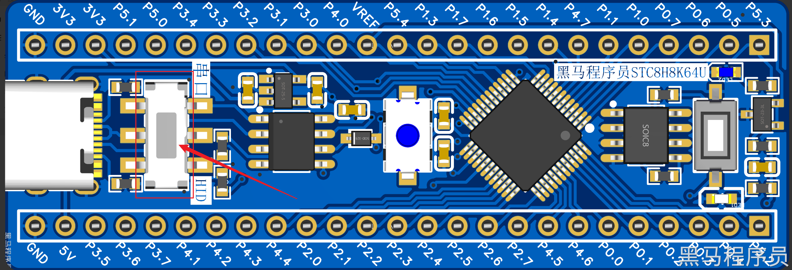</p><ol list="u44c56dd3" start="2"><li data-lake-id="u8a145d96" fid="uc1e0c377" id="u8a145d96"><span data-lake-id="u8c5229a9" id="u8c5229a9">按住白色按钮不要松开</span></li></ol><p data-lake-id="uf75ba1d8" id="uf75ba1d8" style="padding-left: 2em">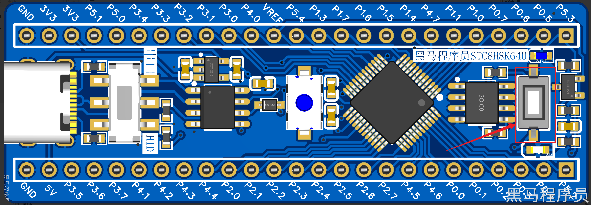</p><ol list="u71c32086" start="3"><li data-lake-id="ub22f09fb" fid="u6a4ec6ae" id="ub22f09fb"><span data-lake-id="u9226ec9b" id="u9226ec9b">按住蓝色按钮2秒，然后松开</span></li></ol><p data-lake-id="ue4f94b93" id="ue4f94b93" style="padding-left: 2em">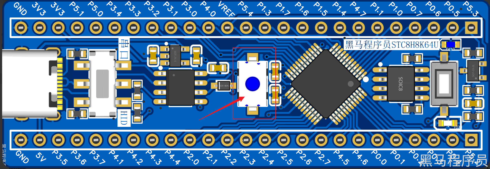</p><ol list="u9f951587" start="4"><li data-lake-id="u0d047b7c" fid="u12f2fed3" id="u0d047b7c"><span data-lake-id="ue5b35fe4" id="ue5b35fe4">观察STC-ISP烧录工具，如果在扫描串口部分出现HID接口，说明成功，否则，按照2、3步骤重复尝试</span></li></ol><p data-lake-id="u0bcb6ccd" id="u0bcb6ccd" style="padding-left: 2em">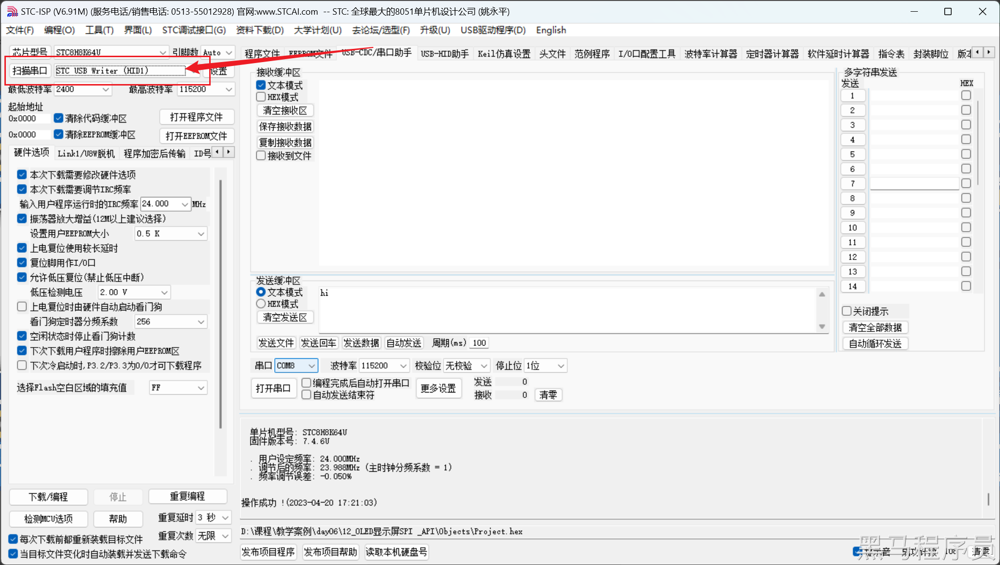</p><ol list="u562bd756" start="5"><li data-lake-id="ud5c64d3c" fid="uafd3a97d" id="ud5c64d3c"><span data-lake-id="ubd032c88" id="ubd032c88">接下来，就可以进行程序烧录，点击下载，无需再安蓝色按钮就可以烧录了</span></li></ol><h3 data-lake-id="O3eSw" id="O3eSw"><span data-lake-id="ua0a47035" id="ua0a47035">USB HID协议</span></h3><p data-lake-id="uaf06d607" id="uaf06d607"><span data-lake-id="uc2bd09e9" id="uc2bd09e9">USB HID（Human Interface Device）是一种USB协议，用于连接人机界面设备（如键盘、鼠标、游戏控制器等）到计算机系统。HID协议提供了一种标准的、规范化的接口，使得这些设备可以在不同的操作系统和平台上运行，并且无需安装任何驱动程序。</span></p><p data-lake-id="u4f326a4d" id="u4f326a4d"><span data-lake-id="u88854b8b" id="u88854b8b">HID设备与主机之间的通信是通过数据报文来实现的，通信报文的格式由HID协议规定，主要包括报文头、报文数据和报文状态等信息。HID设备需要向主机发送报文，以响应主机的命令，同时也可以通过发送报文来向主机汇报设备的状态和事件。</span></p><p data-lake-id="u67847207" id="u67847207"><span data-lake-id="u95cb2a77" id="u95cb2a77">在HID协议中，设备可以有多个端点（Endpoint）来支持不同的数据传输方式，其中，输入端点（IN Endpoint）用于从设备向主机传输数据，输出端点（OUT Endpoint）用于从主机向设备传输数据。HID设备通过输入端点向主机发送设备状态信息和事件信息，主机通过输出端点向设备发送控制指令。</span></p><p data-lake-id="u28707fef" id="u28707fef"><span data-lake-id="u223005fb" id="u223005fb">HID协议的使用使得人机界面设备的开发变得更加方便和便捷，并且可以实现设备的即插即用。</span></p><h4 data-lake-id="bIiRi" id="bIiRi"><span data-lake-id="ud1dbf710" id="ud1dbf710">USB协议组成</span></h4><p data-lake-id="u2cda88b2" id="u2cda88b2"><span data-lake-id="u4bf6c8a6" id="u4bf6c8a6">在USB HID协议中，有两个主要的对象：主机和设备。主机通常是PC或其他计算机系统，设备可以是任何USB HID设备，例如鼠标、键盘、游戏手柄等。</span></p><p data-lake-id="uba20aef7" id="uba20aef7"><span data-lake-id="uf11797f3" id="uf11797f3">主机和设备之间的通讯是通过在USB总线上传输数据包来完成的。USB HID设备在被插入主机时，会被主机检测到并分配一个唯一的地址。然后，主机可以向设备发送控制命令，例如获取设备信息、发送数据等。</span></p><p data-lake-id="u19a624eb" id="u19a624eb"><span data-lake-id="ud4298df2" id="ud4298df2">设备通过向主机发送报告（report）来提供其状态和数据。报告是一组数据字节，其格式由HID协议规定。根据HID规范，设备必须支持三种类型的报告：输入报告（Input Report）、输出报告（Output Report）和特征报告（Feature Report）。</span></p><p data-lake-id="u2e592b70" id="u2e592b70"><span data-lake-id="u16b91666" id="u16b91666">输入报告是设备向主机报告其状态和数据的报告类型。例如，鼠标向主机发送其位置和按键状态。输出报告是主机向设备发送的命令或配置参数等数据的报告类型。例如，主机发送命令让设备关闭或者设置设备参数。特征报告是一种可选的报告类型，可以用于读取或写入设备的某些特性，例如设备的名称或唯一标识符等。</span></p><p data-lake-id="u343c079d" id="u343c079d"><span data-lake-id="u7a210994" id="u7a210994">一些专有名词：</span></p><ol list="u9051fd06"><li data-lake-id="u80cadfeb" fid="ua9543a80" id="u80cadfeb"><span data-lake-id="u1dcf71c2" id="u1dcf71c2">设备描述符（Device Descriptor）：描述USB设备的一般特性，例如设备类、子类、协议、供应商ID、产品ID等。</span></li><li data-lake-id="ud0e4b874" fid="ua9543a80" id="ud0e4b874"><span data-lake-id="u76226172" id="u76226172">配置描述符（Configuration Descriptor）：描述设备的一个或多个配置，每个配置由多个接口组成，每个接口描述设备的一个功能。</span></li><li data-lake-id="u24475a49" fid="ua9543a80" id="u24475a49"><span data-lake-id="ua8213cde" id="ua8213cde">接口描述符（Interface Descriptor）：描述设备的一个功能，包括设备类、子类、协议等信息。</span></li><li data-lake-id="uabaa861a" fid="ua9543a80" id="uabaa861a"><span data-lake-id="u00364c0f" id="u00364c0f">HID描述符（HID Descriptor）：描述HID设备的特性，例如报告描述符的数量、报告描述符的长度等。</span></li><li data-lake-id="u956d7e85" fid="ua9543a80" id="u956d7e85"><span data-lake-id="u0843c7fb" id="u0843c7fb">报告描述符（Report Descriptor）：描述HID设备传输的数据格式和类型，包括输入、输出、特性等信息。</span></li><li data-lake-id="uc5f74fdc" fid="ua9543a80" id="uc5f74fdc"><span data-lake-id="u15938d6c" id="u15938d6c">一般描述符（Generic Descriptor）：用于描述除设备、配置、接口、HID和报告之外的其他信息。</span></li><li data-lake-id="ue8bad1e0" fid="ua9543a80" id="ue8bad1e0"><span data-lake-id="u9a94b6e4" id="u9a94b6e4">字符串描述符（String Descriptor）：描述设备和厂商的字符串信息。</span></li></ol><h4 data-lake-id="vAHYP" id="vAHYP"><span data-lake-id="uf367b31f" id="uf367b31f">通讯流程</span></h4><p data-lake-id="u6af90d34" id="u6af90d34"><span data-lake-id="u9e606983" id="u9e606983">USB HID通讯时序可以大致分为以下几个步骤：</span></p><ol list="ub5a23eb1"><li data-lake-id="uf995fc61" fid="udd3cb5cc" id="uf995fc61"><span data-lake-id="u73c17a26" id="u73c17a26">设备连接和初始化：设备被插入USB端口后，会进行初始化和配置，包括分配USB地址和设置通信端点等。</span></li><li data-lake-id="uff9d1cbc" fid="udd3cb5cc" id="uff9d1cbc"><span data-lake-id="u200c4919" id="u200c4919">主机发送设备描述符：主机会向设备发送请求，要求设备提供自己的描述符信息，包括设备类型、厂商信息、设备功能等。</span></li><li data-lake-id="u6ff571d0" fid="udd3cb5cc" id="u6ff571d0"><span data-lake-id="u8867e044" id="u8867e044">设备响应描述符请求：设备接收到主机的请求后，会根据请求提供相应的设备描述符信息，包括设备类型、厂商信息、设备功能等。</span></li><li data-lake-id="u1b4e5e4d" fid="udd3cb5cc" id="u1b4e5e4d"><span data-lake-id="u1416b7ba" id="u1416b7ba">主机发送配置描述符：主机会向设备发送请求，要求设备提供自己的配置描述符信息，包括端点数量、数据传输速率、电源需求等。</span></li><li data-lake-id="ufaa25713" fid="udd3cb5cc" id="ufaa25713"><span data-lake-id="ue4573772" id="ue4573772">设备响应配置描述符请求：设备接收到主机的请求后，会根据请求提供相应的配置描述符信息，包括端点数量、数据传输速率、电源需求等。</span></li><li data-lake-id="ud2ef62f9" fid="udd3cb5cc" id="ud2ef62f9"><span data-lake-id="uc611cb03" id="uc611cb03">主机发送数据：主机会向设备发送数据包，数据包中包含了控制信息和数据内容。</span></li><li data-lake-id="ud9e52827" fid="udd3cb5cc" id="ud9e52827"><span data-lake-id="u3ca23c54" id="u3ca23c54">设备接收和处理数据：设备接收到主机发送的数据包后，会进行处理和响应，包括识别控制信息和处理数据内容。</span></li><li data-lake-id="uba9de073" fid="udd3cb5cc" id="uba9de073"><span data-lake-id="uafaaed8b" id="uafaaed8b">设备发送数据：设备会向主机发送数据包，数据包中包含了控制信息和数据内容。</span></li><li data-lake-id="ua5a2bbb6" fid="udd3cb5cc" id="ua5a2bbb6"><span data-lake-id="u2c9b241b" id="u2c9b241b">主机接收和处理数据：主机接收到设备发送的数据包后，会进行处理和响应，包括识别控制信息和处理数据内容。</span></li><li data-lake-id="u5fa66f9f" fid="udd3cb5cc" id="u5fa66f9f"><span data-lake-id="ue161b9eb" id="ue161b9eb">完成通讯：通讯完成后，设备和主机会进行断开连接和资源释放等操作。</span></li></ol><p data-lake-id="u1e59d08e" id="u1e59d08e"><span data-lake-id="u56c35aeb" id="u56c35aeb">需要注意的是，USB HID通讯过程中的具体时序和流程可能会因为具体的应用场景和设备而有所不同，上述步骤仅供参考。</span></p><p data-lake-id="u40b1c6f6" id="u40b1c6f6">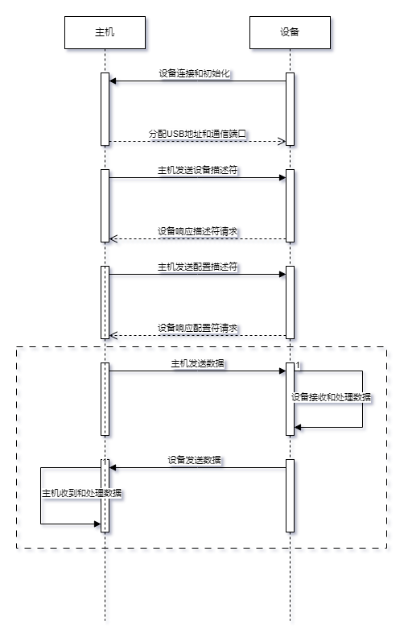</p><h3 data-lake-id="yHx9s" id="yHx9s"><span data-lake-id="ueb36a8e5" id="ueb36a8e5">官方USB HID范例</span></h3><p data-lake-id="u909e1b55" id="u909e1b55"><span data-lake-id="ua09f0af9" id="ua09f0af9">官方提供了HID的示例，我们通过示例来学习一些内容。</span></p><ol list="ude209418"><li data-lake-id="u4509a8d7" fid="ud0af2e10" id="u4509a8d7"><span data-lake-id="u166eb219" id="u166eb219">拷贝官方示例，编译，烧录到开发板中</span></li><li data-lake-id="ud5fbfad7" fid="ud0af2e10" id="ud5fbfad7"><span data-lake-id="uea5625b2" id="uea5625b2">将开发板的开关拨动到</span><code data-lake-id="u1275f594" id="u1275f594"><span data-lake-id="ufe1bff6e" id="ufe1bff6e">HID</span></code></li><li data-lake-id="u20f18147" fid="ud0af2e10" id="u20f18147"><span data-lake-id="u4205b45b" id="u4205b45b">打开设置中，来到</span><code data-lake-id="ufde52966" id="ufde52966"><span data-lake-id="u960effce" id="u960effce">蓝牙和其他设备</span></code><span data-lake-id="ufc9742db" id="ufc9742db">中，点击进入</span><code data-lake-id="u71db20cd" id="u71db20cd"><span data-lake-id="uc968dcab" id="uc968dcab">设备</span></code><span data-lake-id="u10b8acb6" id="u10b8acb6">中</span></li></ol><p data-lake-id="u47135ad3" id="u47135ad3" style="padding-left: 2em">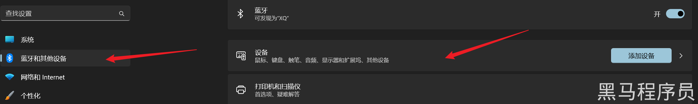</p><ol list="u110e43ba" start="4"><li data-lake-id="u2b03023e" fid="u340aed82" id="u2b03023e"><span data-lake-id="ua43fc312" id="ua43fc312">查看</span><code data-lake-id="ub42bf6f7" id="ub42bf6f7"><span data-lake-id="u3cc66e88" id="u3cc66e88">输入</span></code><span data-lake-id="ucd84d011" id="ucd84d011">中，多了一个</span><code data-lake-id="ud8ef8a07" id="ud8ef8a07"><span data-lake-id="u500dbb82" id="u500dbb82">STC HID Demo</span></code></li></ol><p data-lake-id="u76c5720a" id="u76c5720a" style="padding-left: 2em">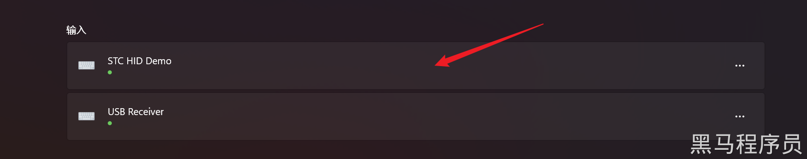</p><ol list="uf0fddca9" start="5"><li data-lake-id="ua9f90d3a" fid="uc05fa734" id="ua9f90d3a"><span data-lake-id="u78a1fe40" id="u78a1fe40">将开发板的开关进行切换，观察这个</span><code data-lake-id="u0b78e650" id="u0b78e650"><span data-lake-id="u193ec6fc" id="u193ec6fc">输入</span></code><span data-lake-id="uce5609de" id="uce5609de">中的变化</span></li></ol><p data-lake-id="uef1c9f85" id="uef1c9f85"><span data-lake-id="u3fc8163c" id="u3fc8163c">官方示例的作用，就是帮助我们构建了一个HID设备，将设备注册到了PC机中。</span></p><h4 data-lake-id="IBOzN" id="IBOzN"><span data-lake-id="u300645ce" id="u300645ce">文件说明</span></h4><ul list="uc46dad87"><li data-lake-id="u394fd64e" fid="ub1fa29f0" id="u394fd64e"><code data-lake-id="u189da3b1" id="u189da3b1"><span data-lake-id="u2b62b9c1" id="u2b62b9c1">usb.c</span></code><span data-lake-id="u56a19752" id="u56a19752">和</span><code data-lake-id="u11f90c22" id="u11f90c22"><span data-lake-id="ubeecb25c" id="ubeecb25c">usb.h</span></code><span data-lake-id="u9dbc61ff" id="u9dbc61ff">：  USB入口文件，提供USB所有功能，设备信息，配置信息，通讯过程等</span></li><li data-lake-id="u8986ccfb" fid="ub1fa29f0" id="u8986ccfb"><code data-lake-id="u02e06ab2" id="u02e06ab2"><span data-lake-id="u945690d4" id="u945690d4">usb_req_std.c</span></code><span data-lake-id="u6c15aeb7" id="u6c15aeb7">和</span><code data-lake-id="u83351730" id="u83351730"><span data-lake-id="u92d340b5" id="u92d340b5">usb_req_std.h</span></code><span data-lake-id="uf2177c83" id="uf2177c83">：设备信息和配置信息通讯过程中的逻辑实现。</span></li><li data-lake-id="u2d41898c" fid="ub1fa29f0" id="u2d41898c"><code data-lake-id="ua6757378" id="ua6757378"><span data-lake-id="u37fbec2e" id="u37fbec2e">usb_req_class.c</span></code><span data-lake-id="u19427bf4" id="u19427bf4">和</span><code data-lake-id="uda30c204" id="uda30c204"><span data-lake-id="ud4dcca09" id="ud4dcca09">usb_req_class.h</span></code><span data-lake-id="uf0250a0a" id="uf0250a0a">：通讯过程中的逻辑实现</span></li><li data-lake-id="u24de46e3" fid="ub1fa29f0" id="u24de46e3"><code data-lake-id="u0cec7ec8" id="u0cec7ec8"><span data-lake-id="u82706ca9" id="u82706ca9">usb_vendor.c</span></code><span data-lake-id="ud6c199f0" id="ud6c199f0">和</span><code data-lake-id="udb8eab7d" id="udb8eab7d"><span data-lake-id="udeca5f03" id="udeca5f03">usb_vendor.h</span></code><span data-lake-id="ufcde2e60" id="ufcde2e60">：初始化配置逻辑</span></li><li data-lake-id="u3e3fe032" fid="ub1fa29f0" id="u3e3fe032"><code data-lake-id="ub2aede0c" id="ub2aede0c"><span data-lake-id="uda04506c" id="uda04506c">usb_desc.c</span></code><span data-lake-id="u24cccf94" id="u24cccf94">和</span><code data-lake-id="u0f087a7f" id="u0f087a7f"><span data-lake-id="u972d4ed0" id="u972d4ed0">usb_desc.h</span></code><span data-lake-id="u078533bc" id="u078533bc">: 协议描述信息，内部是协议的常量信息。</span></li></ul><h4 data-lake-id="C3pOr" id="C3pOr"><span data-lake-id="u5084addc" id="u5084addc">修改PC端的显示</span></h4><p data-lake-id="u7105bfe7" id="u7105bfe7"><span data-lake-id="ucf84bcd7" id="ucf84bcd7">修改</span><code data-lake-id="u7660e675" id="u7660e675"><span data-lake-id="u7c38db0a" id="u7c38db0a">usb_desc.c</span></code><span data-lake-id="uc7324aab" id="uc7324aab">中间的内容即可：</span></p><ol list="ue1bf3765"><li data-lake-id="ud8092c66" fid="u4cf31f91" id="ud8092c66"><code data-lake-id="u2e950548" id="u2e950548"><span data-lake-id="u704dbf54" id="u704dbf54">MANUFACTDESC</span></code><span data-lake-id="u49fac28b" id="u49fac28b">制造商信息。</span></li></ol><span class="yuque-card-unsupported">[codeblock]</span><span class="yuque-card-unsupported">[codeblock]</span><blockquote data-lake-id="u51357cff" id="u51357cff" style="padding-left: 2em"><p data-lake-id="u53d9e13a" id="u53d9e13a"><span data-lake-id="u3691b7c0" id="u3691b7c0">修改后长度发生变化，长度由第一个字符描述决定。</span></p><p data-lake-id="u18770393" id="u18770393"><span data-lake-id="u8386144b" id="u8386144b">需要同时修改头文件长度配置信息</span></p></blockquote><ol list="ue1bf3765" start="2"><li data-lake-id="u8d208192" fid="u4cf31f91" id="u8d208192"><code data-lake-id="u79472875" id="u79472875"><span data-lake-id="ub8439349" id="ub8439349">PRODUCTDESC</span></code><span data-lake-id="ucc2dc3c9" id="ucc2dc3c9">产品信息。</span></li></ol><span class="yuque-card-unsupported">[codeblock]</span><span class="yuque-card-unsupported">[codeblock]</span><blockquote data-lake-id="uf50484b3" id="uf50484b3" style="padding-left: 2em"><p data-lake-id="u4681a80c" id="u4681a80c"><span data-lake-id="uf3e5402a" id="uf3e5402a">修改后长度发生变化，长度由第一个字符描述决定。</span></p><p data-lake-id="u8bd04b47" id="u8bd04b47"><span data-lake-id="ub1d4f275" id="ub1d4f275">需要同时修改头文件长度配置信息</span></p><p data-lake-id="u6aea60d1" id="u6aea60d1"><span data-lake-id="u2b9c60a2" id="u2b9c60a2">如果是中文，需要把中文转化为ASCII码格式（</span><a data-lake-id="u6367c6fe" href="https://www.ip138.com/ascii/" id="u6367c6fe" rel="noopener noreferrer" target="_blank"><span data-lake-id="u647f82ab" id="u647f82ab">ASCII在线转换</span></a><span data-lake-id="u1859337b" id="u1859337b">），写入其中</span></p><p data-lake-id="uc1d5b9f1" id="uc1d5b9f1"><span data-lake-id="udf2537e8" id="udf2537e8">例如：</span></p><ul list="ub03173c7"><li data-lake-id="uefe3d986" fid="ueea71784" id="uefe3d986"><span data-lake-id="u1507f131" id="u1507f131">​</span><code data-lake-id="u4526b4a8" id="u4526b4a8"><span data-lake-id="u478b45e5" id="u478b45e5">黑马程序员</span></code><span data-lake-id="ucaae5f52" id="ucaae5f52">对应ASCII码：</span><code data-lake-id="u716c463f" id="u716c463f"><span data-lake-id="u34168a84" id="u34168a84">\u9ed1\u9a6c\u7a0b\u5e8f\u5458</span></code></li><li data-lake-id="uca2d04f5" fid="ueea71784" id="uca2d04f5"><span data-lake-id="u8e782c02" id="u8e782c02">汉字低位在前，添加</span><code data-lake-id="u16a31c53" id="u16a31c53"><span data-lake-id="u8b76651f" id="u8b76651f">黑</span></code><span data-lake-id="uf8aa5f9b" id="uf8aa5f9b">为：</span><code data-lake-id="ua803830c" id="ua803830c"><span data-lake-id="u17b9e008" id="u17b9e008">0xd1</span></code><span data-lake-id="u68b1e692" id="u68b1e692">, </span><code data-lake-id="u1ed5b90c" id="u1ed5b90c"><span data-lake-id="ub99aa90b" id="ub99aa90b">0x9e</span></code></li></ul></blockquote><h3 data-lake-id="pCrU3" id="pCrU3"><span data-lake-id="u6b19d44f" id="u6b19d44f">兼容库函数</span></h3><p data-lake-id="u5f8e9e4e" id="u5f8e9e4e"><span data-lake-id="ua1c7e1cc" id="ua1c7e1cc">由于提供的官方示例中，</span><code data-lake-id="u72a54e9f" id="u72a54e9f"><span data-lake-id="u2ee1bde4" id="u2ee1bde4">stc.h</span></code><code data-lake-id="uac198f99" id="uac198f99"><span data-lake-id="ua606bb64" id="ua606bb64">STC8H.h</span></code><code data-lake-id="u1e968495" id="u1e968495"><span data-lake-id="u08f44656" id="u08f44656">config.h</span></code><span data-lake-id="u99f70493" id="u99f70493">，这些文件和我们需要用到的库函数，在变量定义或者是文件命名上，存在重名等冲突，需要进行修改。</span></p><ol list="uaccb352a"><li data-lake-id="ubd6d72e0" fid="ufbf046f9" id="ubd6d72e0"><span data-lake-id="u4dee3b61" id="u4dee3b61">将这三个文件合并成一个文件</span><code data-lake-id="u09f64a00" id="u09f64a00"><span data-lake-id="u102fb2ed" id="u102fb2ed">usb_config.h</span></code></li></ol><span class="yuque-card-unsupported">[codeblock]</span><ol list="uaccb352a" start="2"><li data-lake-id="u5a21ee98" fid="ufbf046f9" id="u5a21ee98"><span data-lake-id="u23eaf80e" id="u23eaf80e">修改所有include的文件头信息为</span><code data-lake-id="u88d887b6" id="u88d887b6"><span data-lake-id="u40d3c259" id="u40d3c259">usb_config.h</span></code></li><li data-lake-id="udccc1145" fid="ufbf046f9" id="udccc1145"><span data-lake-id="u7a2014d5" id="u7a2014d5">修改</span><code data-lake-id="u4e1ac350" id="u4e1ac350"><span data-lake-id="u04d60418" id="u04d60418">main.c</span></code><span data-lake-id="uadc45912" id="uadc45912">，进行调试测试</span></li></ol><span class="yuque-card-unsupported">[codeblock]</span><p data-lake-id="u78ee155f" id="u78ee155f"><br/></p><h3 data-lake-id="gcaHF" id="gcaHF"><span data-lake-id="ue2f7ebcd" id="ue2f7ebcd">HID键盘</span></h3><p data-lake-id="u5ed672cf" id="u5ed672cf"><span data-lake-id="u0ff582e1" id="u0ff582e1">官方提供了键盘案例实现，但是嵌套太多，我们需要自己摘出来</span></p><span class="yuque-card-unsupported">[codeblock]</span><p data-lake-id="uff645ba9" id="uff645ba9"><span data-lake-id="uc1c218ef" id="uc1c218ef">在</span><code data-lake-id="u25337321" id="u25337321"><span data-lake-id="u33867450" id="u33867450">usb_req_class.h</span></code><span data-lake-id="u90ba53c3" id="u90ba53c3">头中添加声明</span></p><span class="yuque-card-unsupported">[codeblock]</span><p data-lake-id="u222ba3eb" id="u222ba3eb"><code data-lake-id="u3cb137d0" id="u3cb137d0"><span data-lake-id="u5cb8f682" id="u5cb8f682">usb_req_class.c</span></code><span data-lake-id="u77736f9a" id="u77736f9a">中添加实现</span></p><span class="yuque-card-unsupported">[codeblock]</span><p data-lake-id="u11c13c5f" id="u11c13c5f"><br/></p><p data-lake-id="u14c2c36a" id="u14c2c36a"><span data-lake-id="u8ad214ba" id="u8ad214ba">修改</span><code data-lake-id="ucf79639d" id="ucf79639d"><span data-lake-id="ubeaca566" id="ubeaca566">usb_desc.c</span></code><span data-lake-id="u2800b9ba" id="u2800b9ba">中的配置</span></p><span class="yuque-card-unsupported">[codeblock]</span><p data-lake-id="uf54c79b3" id="uf54c79b3"><span data-lake-id="u77b4e7a8" id="u77b4e7a8">键盘主逻辑</span></p><span class="yuque-card-unsupported">[codeblock]</span><h3 data-lake-id="wmeWR" id="wmeWR"><span data-lake-id="ua136c39c" id="ua136c39c">USB调试工具</span></h3><p data-lake-id="u7dfc62b9" id="u7dfc62b9"><span data-lake-id="u83aa7374" id="u83aa7374">USBlyzer是一款调试USB接口的工具</span></p><h3 data-lake-id="XuGKh" id="XuGKh"><span data-lake-id="u507cc543" id="u507cc543">USB 描述符</span></h3><h4 data-lake-id="rSEWM" id="rSEWM"><span data-lake-id="u352fcf9b" id="u352fcf9b">设备描述符</span></h4><span class="yuque-card-unsupported">[codeblock]</span><span class="yuque-card-unsupported">[codeblock]</span><ul list="u3715f675"><li data-lake-id="u02dda326" fid="u14f373ca" id="u02dda326"><span data-lake-id="u6b58e04a" id="u6b58e04a">bLength : 描述符大小．固定为0x12．</span></li><li data-lake-id="ue33a79ce" fid="u14f373ca" id="ue33a79ce"><span data-lake-id="ub1e39c85" id="ub1e39c85">bDescriptorType : 设备描述符类型．固定为0x01．</span></li><li data-lake-id="ubebadce9" fid="u14f373ca" id="ubebadce9"><span data-lake-id="u55f86648" id="u55f86648">bcdUSB : USB 规范发布号．表示了本设备能适用于那种协议，如2.0=0200，1.1=0110等．</span></li><li data-lake-id="u37d0e400" fid="u14f373ca" id="u37d0e400"><span data-lake-id="ub7769139" id="ub7769139">bDeviceClass : 类型代码（由USB指定）。当它的值是0时，表示所有接口在配置描述符里，并且所有接口是独立的。当它的值是1到FEH时，表示不同的接口关联的。当它的值是FFH时，它是厂商自己定义的．</span></li><li data-lake-id="uebb6aef4" fid="u14f373ca" id="uebb6aef4"><span data-lake-id="u51977d9d" id="u51977d9d">bDeviceSubClass : 子类型代码（由USB分配）．如果bDeviceClass值是0，一定要设置为0．其它情况就跟据USB-IF组织定义的编码．</span></li><li data-lake-id="u8ea278a0" fid="u14f373ca" id="u8ea278a0"><span data-lake-id="uf73e9da7" id="uf73e9da7">bDeviceProtocol : 协议代码（由USB分配）．如果使用USB-IF组织定义的协议，就需要设置这里的值，否则直接设置为0。如果厂商自己定义的可以设置为FFH．</span></li></ul><blockquote data-lake-id="u37769a0a" id="u37769a0a" style="padding-left: 2em"><p data-lake-id="udc8b1387" id="udc8b1387" style="padding-left: 2em"><span data-lake-id="ue6a7cb41" id="ue6a7cb41">操作系统使用bDeviceClass、bDeviceSubClass和bDeviceProtocol来查找设备的类驱动程序。通常只有 bDeviceClass 设置在设备级别。大多数类规范选择在接口级别标识自己，因此将 bDeviceClass 设置为 0x00。这允许一个设备支持多个类，即USB复合设备。</span></p></blockquote><ul list="udf24cca3"><li data-lake-id="u2f613fe7" fid="uc8fafa11" id="u2f613fe7"><span data-lake-id="ubf619d90" id="ubf619d90">bMaxPacketSize0 : 端点０最大分组大小（只有8,16,32,64有效）．</span></li><li data-lake-id="uc035e0c1" fid="uc8fafa11" id="uc035e0c1"><span data-lake-id="u7d00568c" id="u7d00568c">idVendor : 供应商ID（由USB分配）．</span></li><li data-lake-id="uddd1174e" fid="uc8fafa11" id="uddd1174e"><span data-lake-id="u439f46e1" id="u439f46e1">idProduct : 产品ID（由厂商分配）．由供应商ID和产品ID，就可以让操作系统加载不同的驱动程序．</span></li><li data-lake-id="u81c9049e" fid="uc8fafa11" id="u81c9049e"><span data-lake-id="u9d496d20" id="u9d496d20">bcdDevice : 设备出产编码．由厂家自行设置．</span></li><li data-lake-id="u5f648dd2" fid="uc8fafa11" id="u5f648dd2"><span data-lake-id="ub0b6a9e8" id="ub0b6a9e8">iManufacturer : 厂商描述符字符串索引．索引到对应的字符串描述符． 为０则表示没有．</span></li><li data-lake-id="u1b6e7ef8" fid="uc8fafa11" id="u1b6e7ef8"><span data-lake-id="u90af1390" id="u90af1390">iProduct : :产品描述符字符串索引．同上．</span></li><li data-lake-id="u74eec68a" fid="uc8fafa11" id="u74eec68a"><span data-lake-id="u92845783" id="u92845783">iSerialNumber : 设备序列号字符串索引．同上．</span></li><li data-lake-id="u82c8cde4" fid="uc8fafa11" id="u82c8cde4"><span data-lake-id="u1ef76342" id="u1ef76342">bNumConfigurations : 可能的配置数．定义设备以当前速度支持的配置数量</span></li></ul><h4 data-lake-id="zLUgN" id="zLUgN"><span data-lake-id="u551aed76" id="u551aed76">配置描述符</span></h4><span class="yuque-card-unsupported">[codeblock]</span><ul list="u854f601f"><li data-lake-id="u38cb955a" fid="u365aa4bc" id="u38cb955a"><span data-lake-id="udced6421" id="udced6421">bLength : 描述符大小．固定为0x09．</span></li><li data-lake-id="uf2041329" fid="u365aa4bc" id="uf2041329"><span data-lake-id="ub0f27f07" id="ub0f27f07">bDescriptorType : 配置描述符类型．固定为0x02．</span></li><li data-lake-id="u31fbf513" fid="u365aa4bc" id="u31fbf513"><span data-lake-id="u45f81017" id="u45f81017">wTotalLength : 返回整个数据的长度．指此配置返回的配置描述符，接口描述符以及端点描述符的全部大小．</span></li><li data-lake-id="u5d87ece7" fid="u365aa4bc" id="u5d87ece7"><span data-lake-id="u1159d505" id="u1159d505">bNumInterfaces : 配置所支持的接口数．指该配置配备的接口数量，也表示该配置下接口描述符数量．</span></li><li data-lake-id="u3550d944" fid="u365aa4bc" id="u3550d944"><span data-lake-id="u4e3c1234" id="u4e3c1234">bConfigurationValue : 作为Set Configuration的一个参数选择配置值．</span></li><li data-lake-id="u726825ec" fid="u365aa4bc" id="u726825ec"><span data-lake-id="uc81cdce5" id="uc81cdce5">iConfiguration : 用于描述该配置字符串描述符的索引．</span></li><li data-lake-id="ud999a8f3" fid="u365aa4bc" id="ud999a8f3"><span data-lake-id="u871df85e" id="u871df85e">bmAttributes : 供电模式选择．Bit4-0保留，D7:总线供电，D6:自供电，D5:远程唤醒．</span></li><li data-lake-id="u3eba58e7" fid="u365aa4bc" id="u3eba58e7"><span data-lake-id="u4983ebed" id="u4983ebed">MaxPower : 总线供电的USB设备的最大消耗电流．以2mA为单位．</span></li><li data-lake-id="u5617aeaa" fid="u365aa4bc" id="u5617aeaa"><span data-lake-id="ue5a7ed94" id="ue5a7ed94">接口描述符：接口描述符说明了接口所提供的配置，一个配置所拥有的接口数量通过配置描述符的bNumInterfaces决定。</span></li></ul><h4 data-lake-id="gr2vB" id="gr2vB"><span data-lake-id="ucc122916" id="ucc122916">接口描述符</span></h4><span class="yuque-card-unsupported">[codeblock]</span><ul list="ua7d83818"><li data-lake-id="u5b336c31" fid="ud290b24e" id="u5b336c31"><span data-lake-id="u492ad9ee" id="u492ad9ee">bLength : 描述符大小．固定为0x09．</span></li><li data-lake-id="ue4da8bcd" fid="ud290b24e" id="ue4da8bcd"><span data-lake-id="uca388a4d" id="uca388a4d">bDescriptorType : 接口描述符类型．固定为0x04．</span></li><li data-lake-id="u042746ee" fid="ud290b24e" id="u042746ee"><span data-lake-id="u8fe136d9" id="u8fe136d9">bInterfaceNumber: 该接口的编号．</span></li><li data-lake-id="ua188e722" fid="ud290b24e" id="ua188e722"><span data-lake-id="uc7439c3f" id="uc7439c3f">bAlternateSetting : 用于为上一个字段选择可供替换的位置．即备用的接口描述符标号．</span></li><li data-lake-id="u258f338c" fid="ud290b24e" id="u258f338c"><span data-lake-id="u0d4d881c" id="u0d4d881c">bNumEndpoint : 使用的端点数目．端点０除外．</span></li><li data-lake-id="u188c0841" fid="ud290b24e" id="u188c0841"><strong><span data-lake-id="u0fe98d41" id="u0fe98d41" style="color: #DF2A3F">bInterfaceClass</span></strong><span data-lake-id="ubbc38147" id="ubbc38147" style="color: #DF2A3F"> </span><span data-lake-id="u1bcc2778" id="u1bcc2778">: 类型代码（由USB分配）．</span></li><li data-lake-id="ub7f6b285" fid="ud290b24e" id="ub7f6b285"><strong><span data-lake-id="u6237cd83" id="u6237cd83" style="color: #DF2A3F">bInterfaceSubClass</span></strong><span data-lake-id="u4dc6aa73" id="u4dc6aa73"> : 子类型代码（由USB分配）．</span></li><li data-lake-id="u40d09bd1" fid="ud290b24e" id="u40d09bd1"><strong><span data-lake-id="ued310095" id="ued310095" style="color: #DF2A3F">bInterfaceProtocol</span></strong><span data-lake-id="u01e2c94e" id="u01e2c94e"> : 协议代码（由USB分配）．</span></li><li data-lake-id="u9e63a49e" fid="ud290b24e" id="u9e63a49e"><span data-lake-id="u349ffb5a" id="u349ffb5a">iInterface : 字符串描述符的索引</span></li></ul><h5 data-lake-id="LW94j" id="LW94j"><span data-lake-id="ub2419876" id="ub2419876">HID类型</span></h5><p data-lake-id="u13c951a5" id="u13c951a5"><span data-lake-id="uf095f731" id="uf095f731">如果 </span><strong><span data-lake-id="u29728977" id="u29728977" style="color: #DF2A3F">bInterfaceClass</span></strong><span data-lake-id="ufb543d8a" id="ufb543d8a" style="color: #DF2A3F"> </span><span data-lake-id="uec060589" id="uec060589">为 </span><code data-lake-id="ue6da648d" id="ue6da648d"><span data-lake-id="uf8cecaa2" id="uf8cecaa2">0x03</span></code><span data-lake-id="u925b4a38" id="u925b4a38">，参考附录中的</span><a data-lake-id="u5d1d330c" href="#gQaIH" id="u5d1d330c"><span data-lake-id="uee9afe44" id="uee9afe44">USB设备定义</span></a></p><p data-lake-id="uf4335cb0" id="uf4335cb0"><span data-lake-id="u2f9a2734" id="u2f9a2734">则 </span><strong><span data-lake-id="u20c03069" id="u20c03069" style="color: #DF2A3F">bInterfaceSubClass</span></strong><span data-lake-id="ub02343ac" id="ub02343ac"> 可选为下：</span></p><p data-lake-id="uf16a91cc" id="uf16a91cc">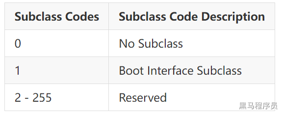</p><blockquote data-lake-id="u9e62abee" id="u9e62abee"><p data-lake-id="uf91676db" id="uf91676db"><span data-lake-id="uf7ed4f70" id="uf7ed4f70">配置为1，表示：</span></p><p data-lake-id="u67ccb36e" id="u67ccb36e"><span data-lake-id="u9dc09285" id="u9dc09285">表示HID设备符是一个启动设备（Boot Device，一般对PC机而言才有意义，意思是BIOS启动时能识别并使用您的HID设备，且只有标准鼠标或键盘类设备才能成为Boot Device，进入bios时不会枚举报告描述符，主机会采用一个默认的标准描述符，所以此时发送的报告要符合这个描述符，这是关键，标准描述符请查询HID协议。</span></p></blockquote><p data-lake-id="ubf6a701d" id="ubf6a701d"><strong><span data-lake-id="u14d1ee08" id="u14d1ee08" style="color: #DF2A3F">bInterfaceProtocol</span></strong><span data-lake-id="ua44751c6" id="ua44751c6"> 表示协议，可选为：</span></p><p data-lake-id="u543745a2" id="u543745a2">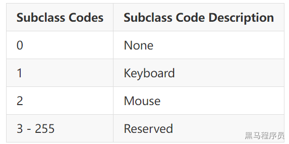</p><ul list="u2cb6fb34"><li data-lake-id="ua343008c" fid="ua80de456" id="ua343008c"><span data-lake-id="u48d70cfe" id="u48d70cfe">0x01: 表示键盘</span></li><li data-lake-id="ud95a4109" fid="ua80de456" id="ud95a4109"><span data-lake-id="u92b078d4" id="u92b078d4">0x02: 表示鼠标</span></li></ul><p data-lake-id="ubdc1c5bc" id="ubdc1c5bc"><span data-lake-id="u4f85771c" id="u4f85771c">​</span><br/></p><h4 data-lake-id="EbZmx" id="EbZmx"><span data-lake-id="u99c88cbb" id="u99c88cbb">HID描述符</span></h4><span class="yuque-card-unsupported">[codeblock]</span><ul list="u3bab0344"><li data-lake-id="uf427261b" fid="ue6d56d51" id="uf427261b"><span data-lake-id="u266fbce0" id="u266fbce0">bLength: 描述符字节数</span></li><li data-lake-id="ua084f0bf" fid="ue6d56d51" id="ua084f0bf"><span data-lake-id="ue7854f6c" id="ue7854f6c">bDescriptorType: HID描述符类型，0x21</span></li><li data-lake-id="uee30ca92" fid="ue6d56d51" id="uee30ca92"><span data-lake-id="u1bdcbe5f" id="u1bdcbe5f">bcdHID：设备与其描述符所遵循的HID规范的版本号码，此数值是4个16进位的BCD格式字符。例如版本1.1的bcdHID是0110h</span></li><li data-lake-id="u075f802e" fid="ue6d56d51" id="u075f802e"><span data-lake-id="uc9148f5c" id="uc9148f5c">bCountryCode：国家的识别码。如果不说明，该字段为0</span></li><li data-lake-id="uc21ff152" fid="ue6d56d51" id="uc21ff152"><span data-lake-id="u103ecc71" id="u103ecc71">bNumDescriptors：HID描述符附属的描述符的类型（报表或实体）。每一个 HID都必须至少支持一个报表描述符。一个接口可以支持多个报表描述符，以及一个或多个实体描述符。</span></li><li data-lake-id="u0a9f650a" fid="ue6d56d51" id="u0a9f650a"><span data-lake-id="u8533cf15" id="u8533cf15">bDescriptorType：HID描述符的偏移量为6和7的bDescriptorType和wDescriptorLength可以重复存在多个。</span></li><li data-lake-id="u71418f75" fid="ue6d56d51" id="u71418f75"><span data-lake-id="u85e7b2ec" id="u85e7b2ec">wDescriptorLength：HID Report的数据长度</span></li></ul><h4 data-lake-id="hstaA" id="hstaA"><span data-lake-id="u7d38efd0" id="u7d38efd0">端点描述符</span></h4><span class="yuque-card-unsupported">[codeblock]</span><ul list="u41690242"><li data-lake-id="uceef8028" fid="u269f5cc6" id="uceef8028"><span data-lake-id="uc79f8a8c" id="uc79f8a8c">bLength : 描述符大小．固定为0x07．</span></li><li data-lake-id="u436e23f1" fid="u269f5cc6" id="u436e23f1"><span data-lake-id="ue3fadb27" id="ue3fadb27">bDescriptorType : 接口描述符类型．固定为0x05．</span></li><li data-lake-id="ufa5cdecc" fid="u269f5cc6" id="ufa5cdecc"><span data-lake-id="u75190e3e" id="u75190e3e">bEndpointAddress : USB设备的端点地址．Bit7，方向，对于控制端点可以忽略，1/0:IN/OUT．Bit6-4，保留．BIt3-0：端点号．</span></li><li data-lake-id="u807d4f57" fid="u269f5cc6" id="u807d4f57"><span data-lake-id="u6265e4e6" id="u6265e4e6">bmAttributes : 端点属性．Bit7-2，保留（同步有定义）．BIt1-0：00控制，01同步，02批量，03中断．</span></li></ul><blockquote data-lake-id="u7a1df17d" id="u7a1df17d" style="padding-left: 2em"><p data-lake-id="u77f3f517" id="u77f3f517"><span data-lake-id="uf4e55c6c" id="uf4e55c6c">当为同步传输时,bEndpointType的bit3-2的值不同代表的含义不同：</span></p><p data-lake-id="udcae3f5d" id="udcae3f5d"><span data-lake-id="u61dc6ccc" id="u61dc6ccc">00：无同步</span></p><p data-lake-id="u4b1b4095" id="u4b1b4095"><span data-lake-id="u9a4f8caa" id="u9a4f8caa">01：异步</span></p><p data-lake-id="u90193e12" id="u90193e12"><span data-lake-id="u4de19032" id="u4de19032">10：适配</span></p><p data-lake-id="u32a30958" id="u32a30958"><span data-lake-id="u91dc3eb3" id="u91dc3eb3">11：同步</span></p><p data-lake-id="u5d6efb10" id="u5d6efb10"><span data-lake-id="u9184c6d5" id="u9184c6d5">BIT5:4</span></p><p data-lake-id="u869638d4" id="u869638d4"><span data-lake-id="u4da32fa5" id="u4da32fa5">00: 表示数据端点</span></p><p data-lake-id="ua91be2f0" id="ua91be2f0"><span data-lake-id="u0c91a1c1" id="u0c91a1c1">01：表示反馈端点Feedback endpoint</span></p><p data-lake-id="u150949c6" id="u150949c6"><span data-lake-id="u24d73f73" id="u24d73f73">10：表示隐式反馈数据端点 Implicit feedback Data endpoint</span></p><p data-lake-id="ue4369449" id="ue4369449"><span data-lake-id="u51ce55f6" id="u51ce55f6">11:保留</span></p></blockquote><ul list="ub745226b"><li data-lake-id="uf349ce80" fid="u5d70af18" id="uf349ce80"><span data-lake-id="u2f88747f" id="u2f88747f">wMaxPacketSize : 本端点接收或发送的最大信息包大小．</span></li></ul><blockquote data-lake-id="u74a06f7f" id="u74a06f7f" style="padding-left: 2em"><p data-lake-id="ufec9a410" id="ufec9a410"><span data-lake-id="u9c0abd39" id="u9c0abd39">USB2.0时：</span></p><p data-lake-id="u0d29377f" id="u0d29377f"><span data-lake-id="u1fafaa80" id="u1fafaa80">对于同步端点，此值用于指示主机在调度中保留的总线时间，这是每(微)帧数据有效负载所需的时间，有效负载时间就是发送一帧数据需要占用的总线时间，在实际数据传输过程中，管道实际使用的带宽可能比保留的带宽少，大家想想，如果实际使用的带宽比保留的还多，那就丢数了；</span></p><p data-lake-id="u3c4fa6fa" id="u3c4fa6fa"><span data-lake-id="u6bdc11b1" id="u6bdc11b1">对于其类型的端点，bit10~bit0指定最大数据包大小(以字节为单位)；</span></p><p data-lake-id="ua177dbed" id="ua177dbed"><span data-lake-id="u3c84f70f" id="u3c84f70f">bit12~bit11对于高速传输的同步和中断端点有效：bit12~bit11可指定每个微帧的额外通信次数，这里大家一定要知道是在高速传输中，当一个事务超时时，在一个微帧时间内重传的次数，如果设置为00b（None），则表示在一个微帧内只传输一个事务，不进行额外的超时重传，如果设置为01b，则表示在一个微帧内可以传输两次事务，有一次额外的重传机会，从下面可以看出，一个微帧最多可以有两次重传事务的机会，如果微帧结束了还是失败，就需要等到下一个微帧继续发送该事务；</span></p></blockquote><blockquote data-lake-id="u4b239142" id="u4b239142" style="padding-left: 2em"><p data-lake-id="u27e6d40e" id="u27e6d40e"><span data-lake-id="uaaea3c09" id="uaaea3c09">USB3.0时：wMaxPacketSize表示包的大小。对于bulk为1024，而对于同步传输，可以为0~1024或 1024。</span></p></blockquote><ul list="u0b9b8710"><li data-lake-id="udfa93560" fid="u42639fcc" id="udfa93560"><span data-lake-id="u2d9ec096" id="u2d9ec096">bInterval : 轮询数据传送端点的时间间隔．对于批量传送和控制传送的端点忽略．对于同步传送的端点，必须为１，对于中断传送的端点，范围为1-255．</span></li></ul><blockquote data-lake-id="u8ccc4230" id="u8ccc4230" style="padding-left: 2em"><p data-lake-id="ub1bf09b7" id="ub1bf09b7"><span data-lake-id="u63405085" id="u63405085">对于全速/高速同步端点，此值必须在1到16之间。bInterval值用作2的指数，例如bInterval为4，表示周期为8个单位；</span></p><p data-lake-id="ub0a5298b" id="ub0a5298b"><span data-lake-id="u68782ed8" id="u68782ed8">对于全速/低速中断端点，该字段的值可以是1到255，也就是主机多少ms给设备发一次数据请求；</span></p><p data-lake-id="u231d6fa4" id="u231d6fa4"><span data-lake-id="u655a0c39" id="u655a0c39">对于高速中断端点，使用bInterval值作为2的指数，例如bInterval为4表示周期为8。这个值必须在1到16之间；</span></p><p data-lake-id="ud24ca073" id="ud24ca073"><span data-lake-id="ub82097e8" id="ub82097e8">对于高速批量/控制输出端点，bInterval必须指定端点的最大NAK速率。值0表示端点永不NAK。其它值表示每个微帧的bInterval*125us时间最多1个NAK。这个值的范围必须在0到255之间；</span></p><p data-lake-id="uc549c726" id="uc549c726"><span data-lake-id="uecbb48b1" id="uecbb48b1">00 = None (1 transaction per microframe)</span></p><p data-lake-id="u047eb616" id="u047eb616"><span data-lake-id="u8a8f7e9c" id="u8a8f7e9c">01 = 1 additional (2 per microframe)</span></p><p data-lake-id="u7bdc80b2" id="u7bdc80b2"><span data-lake-id="uc4d3fa07" id="uc4d3fa07">10 = 2 additional (3 per microframe)</span></p><p data-lake-id="ue0e81960" id="ue0e81960"><span data-lake-id="u2223cd15" id="u2223cd15">11 = Reserved</span></p><p data-lake-id="uc7b1eb93" id="uc7b1eb93"><span data-lake-id="u7f97e455" id="u7f97e455">其它位默认为0，</span></p><p data-lake-id="u7b28fbe5" id="u7b28fbe5"><span data-lake-id="u10b002b0" id="u10b002b0">对于全速/低速批量/控制输出端点，此值无意义，可以任意指定。</span></p></blockquote><h2 data-lake-id="sec8C" id="sec8C"><span data-lake-id="u6fe68aaf" id="u6fe68aaf">附录</span></h2><h3 data-lake-id="gQaIH" id="gQaIH"><span data-lake-id="u09a43744" id="u09a43744">USB设备类型定义</span></h3><p data-lake-id="uefcc189c" id="uefcc189c"><span data-lake-id="u9ecea982" id="u9ecea982">在</span><code data-lake-id="ue39e9817" id="ue39e9817"><span data-lake-id="u48c66e05" id="u48c66e05">接口描述符</span></code><span data-lake-id="u4a24c896" id="u4a24c896">中来定义</span><code data-lake-id="u8966aeb5" id="u8966aeb5"><span data-lake-id="u47198723" id="u47198723">bInterfaceClass</span></code><span data-lake-id="ud67b7b8a" id="ud67b7b8a">参数对应的值，表示当前设备是何种类型。</span></p><p data-lake-id="u3bd3a5e5" id="u3bd3a5e5">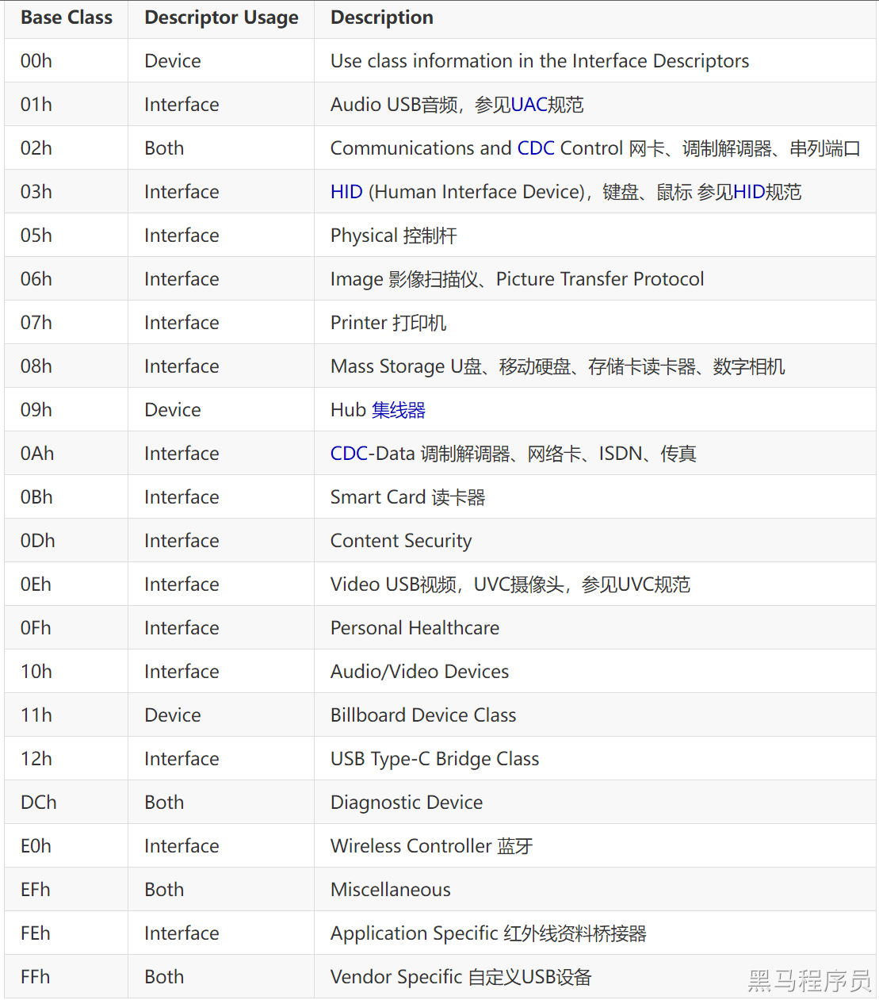</p><p data-lake-id="ufda0c078" id="ufda0c078"><br/></p><p data-lake-id="u801c6adf" id="u801c6adf">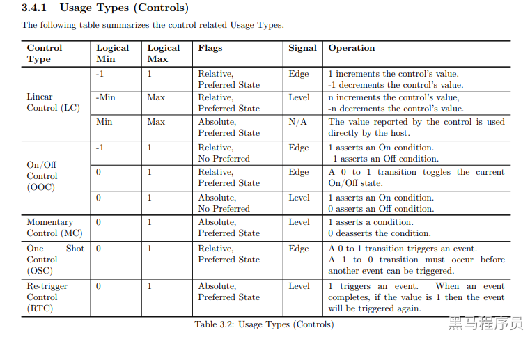</p>